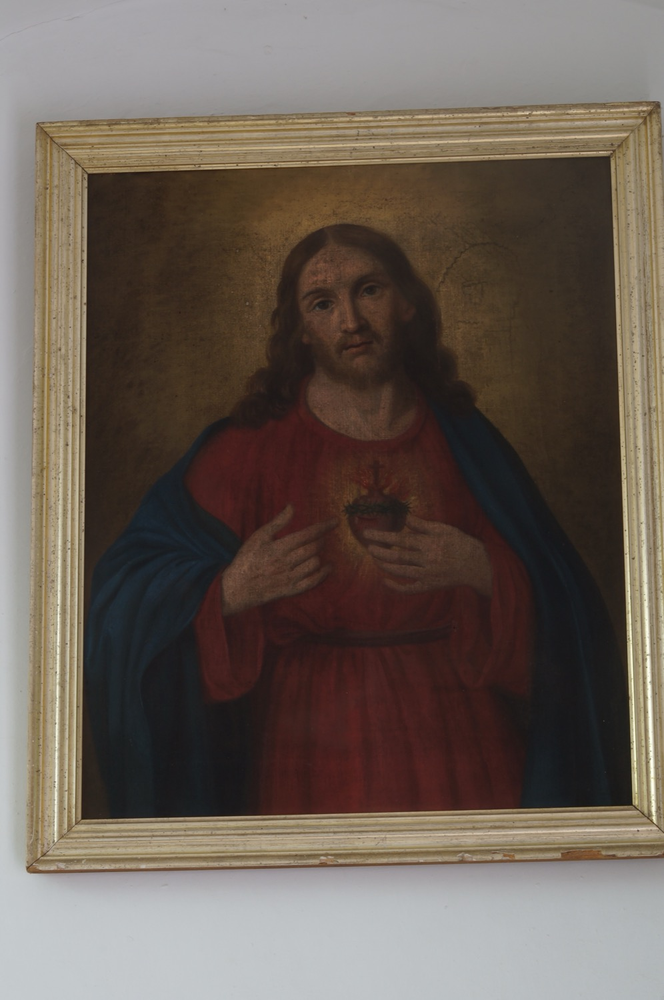

El Sagrado Corazón de Jesús simboliza el amor y la misericordia de Jesús por la humanidad, expresados en un corazón que arde de amor. Esta pintura lo representa con sus elementos más característicos: rodeado por una corona de espinas, como recordatorio de la Pasión; en llamas, símbolo del amor ardiente de Jesús por la humanidad; con una herida, que evoca el momento en que el centurión Longino le traspasó el lado con una lanza; y coronado con una cruz que recuerda su sacrificio.